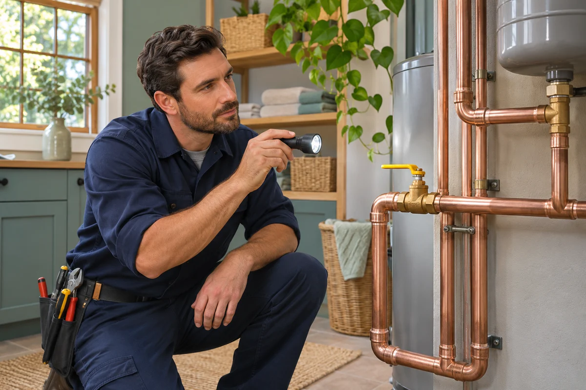

The Flowline approach
Understand the problem before choosing the fix.
Visible leaks can come from joints, worn seals, corrosion or damaged pipework. Assessment helps identify the affected area and the work needed to restore it.
Material compatibility, access, isolation, the condition of nearby fittings and any signs of a wider issue.
COMMON PIPE PROBLEMS
Read the signs. Plan the repair.
Dripping joint
A seal or fitting may need attention.
Inspect the connection and surrounding area.Corrosion
Discoloration or pitting can indicate deterioration.
Assess material condition and replacement scope.Recurring moisture
A hidden source may need further investigation.
Locate the cause before opening or repairing.THE REPAIR JOURNEY
Careful steps. A clear outcome.
Access, materials and the extent of the issue influence the repair plan.

-
01
Inspect and explain
Review visible symptoms and explain the likely source.
-
02
Agree the scope
Discuss materials, access and estimate details.
-
03
Complete the repair
A qualified professional carries out the agreed work.
-
04
Test and hand over
Check operation and explain any follow-up care.
ESTIMATES & ANSWERS
The right repair starts with clarity.
Pipe material, location, access and the extent of damage affect cost. Demo prices are explained in our guide.
View pricing guideWill the whole pipe need replacing?
That depends on the condition of the affected section and the surrounding system. An inspection helps establish the appropriate scope.
Will my water need to be turned off?
Some repairs require isolation. Your technician should explain any interruption before work begins.
Can you quote from a description?
An initial discussion can help frame the issue. A reliable final scope may require an on-site inspection.
How long will a pipe repair take?
Timing depends on access, the pipe material and the extent of the damage. After inspecting the issue, your technician should explain the expected duration and any factors that could change it.
What should I check after the repair?
Ask your technician to explain the checks performed, when the fixture can be used and any follow-up care. Keep the repair notes and contact your service provider if the original symptoms return.
A clear next step
Give that drip the attention it needs.
Describe the location, symptoms and when you first noticed the issue.